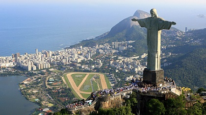
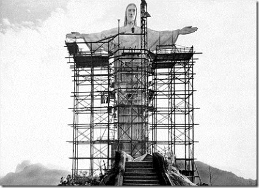

Cristo Redentor
El Cristo Redentor o Cristo del Corcovado es una enorme estatua de Jesús de Nazaret con los brazos abiertos mostrando a la ciudad de Río de Janeiro, Brasil.
La estatua tiene una altura de 30,1 metros sobre un pedestal de 8 metros.1 Este monumento fue inaugurado el 12 de octubre de 1931, después de aproximadamente cinco años de construcción. Considerando la segunda estatua Art decó más grande del mundo, es reconocida como una de las nuevas siete maravillas del mundo moderno junto a Machu Picchu, la Gran Muralla China, el Coliseo de Roma, el Taj Mahal, Chichén Itzá y Petra.
Antes de 1921, el mirador en el Cerro del Corcovado ya era uno de los atractivos turísticos de Río de Janeiro, incluyendo el Ferrocarril del Corcovado, que había sido inaugurado en 1884 por el emperador Pedro II de Brasil.

La idea de un monumento religioso en Río de Janeiro nació en 1859, con el presbítero católico Pedro María Boss y la princesa Isabel de Brasil. Sin embargo, la idea no se concretó durante el Imperio del Brasil. Se retomó en 1921, cuando se aproximaba el centenario de la Independencia de Brasil. Héctor da Silva Costa fue delegado para la ejecución de la obra, y la estatua fue realizada por el escultor francés Paul Landowski.
El rostro de la estatua fue creado por el escultor rumano Gheorghe Leonida (c. 1892/1893 - 1942). Leonida estudió escultura en el Conservatorio de Bellas Artes de Bucarest y tras completar su formación con tres años de estudios en Italia, ganó un premio por la escultura Réveil (en francés, 'Despertar'). Después de eso, se trasladó a París, donde, por su obra Le Diable (en francés, 'El Diablo'), fue de nuevo galardonado con un premio. Tras adquirir fama en Francia como retratista, fue incluido por Paul Landowski en su equipo para trabajar en el Cristo Redentor a partir de 1922.
Construcción
La construcción de hormigón armado, de más de 1000 toneladas, combina ingeniería, arquitectura y escultura; y tiene entre sus logros el hecho de que nadie muriera en accidente durante las obras, algo que no era normal en la época y menos con proyectos de esa dimensión. Por las difíciles condiciones de construcción, que incluían trabajar sobre una base en la que casi no cabía el andamio, soportar fuertes vientos y desarrollar la gran estructura de la estatua, cuyos brazos se extienden hacia el vacío y la cabeza queda inclinada en un desafío a la ingeniería, Levy calificó la obra de «hercúlea».
En la ceremonia de inauguración, el día 12 de octubre de 1931, estaba previsto que la iluminación del monumento fuera accionada desde la ciudad italiana de Nápoles, donde el científico italiano Guillermo Marconi emitiría una señal eléctrica que sería retransmitida por una antena situada en el barrio (carioca). Sin embargo, el mal tiempo imposibilitó la hazaña y la iluminación fue finalmente accionada localmente.
